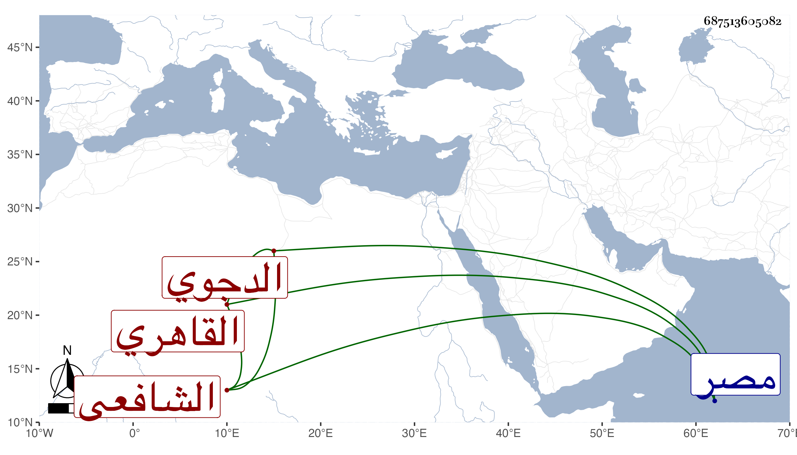

0902Sakhawi.DawLamic.ITO20230111-ara1.EIS1600.687513605082
Biography ID: 687513605082
254
محمد بن محمد بن عبد الرحمن بن حيدرة بن محمد بن محمد بن موسى بن عبد الجليل ابن إبراهيم بن محمد التقي أبو بكر الدجوي ثم القاهري الشافعي . ولد سنة سبع وثلاثين وسبعمائة واشتغل في فنون من العلم ومهر وكان يستحضر الكثير من هذا الفن إلا أنه ليس له فيه عمل القوم ولا كانت له عناية بالتخريج ولا معرفة بالعالي والنازل والأسانيد وشان نفسه بملازمته لعماله مودع الحكم بمصر . ذكره شيخنا كذلك في معجمه وقال أنه قرأ عليه أحاديث من مسلم بسماعه لجميعه في سنة سبع وأربعين على أبي الفرج بن عبد الهادي وثلاثيات مسند أحمد بسماعه لجميع المسند على العرضي وسمع من لفظه المسلسل بسماعه من الميدومي وذكر غير ذلك وأنه سمع على الميدومي السنن لأبي داود في جامع الترمذي على العرضي ومظفر الدين بن العطار قال وكان يذاكرني بأشياء كثيرة من التاريخ وغيره وكتب لي تقريظا على بعض تخاريجي أطنب فيه وأسمع صحيح مسلم مرارا عند عدة من الامراء وكان السالمي يعظمه وينوه به ، ورأيت بخط شيخنا العراقي والمحدث الجمال الزيلعي وصفه بالفضل في بعض الطباق . وقال في الانباء أنه تفقه واشتغل وتقدم وكان ذاكرا للعربية واللغة والغريب والتاريخ مشاركا في الفقه وغيره كثير الاستحضار دقيق الخط ، قال وكان يغتبط بي كثيرا ويحضني على الاشتغال ، وقد نوه السالمي بذكره وقرره مسمعا عند كثير من الامراء وممن قرأ عليه صحيح مسلم طاهر ابن حبيب الموقع . وذكره المقريزي في عقوده وان ممن قرأ عليه فتح الله وقال إنه كان عنده علم جم مع الثقة والضبط والاتقان وكثرة الاستحضار بحيث لم يخلف بعده مثله مات في أواخر ربيع الثاني وقيل في ثامن عشر جمادى الاولى سنة تسع . قلت وبالثاني جزم المقريزي . وروى لنا عنه جماعة وسمعت الثناء عليه بغزير الحفظ من خلق كالعلاء القلقشندي ولكنه غير معدود من الحفاظ على طريقتهم رحمه الله وإيانا .
